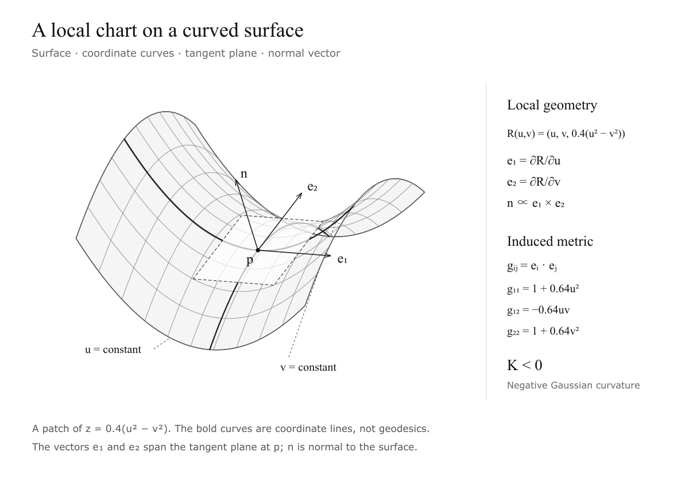
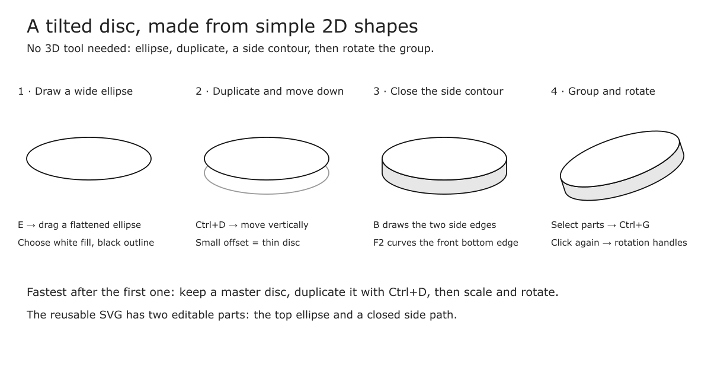
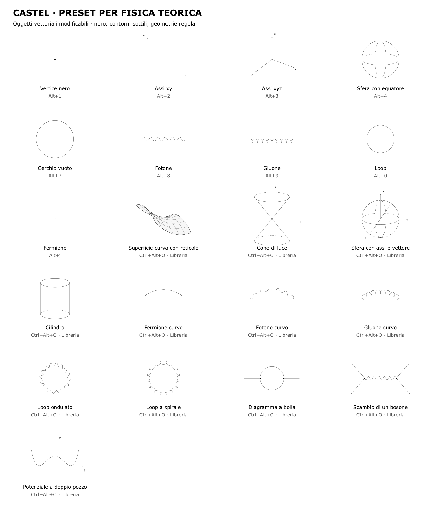

Why I started
I study theoretical physics at the University of Turin. My notes contain long derivations, matrices, operators and diagrams. I wanted to write them during a lecture, then turn the separate lectures into a readable set of course notes. Typing every LaTeX command by hand was getting in the way.
The starting point was a GIF in E. J. Mastnak's Vim–LaTeX guide. Short strings became fractions, derivatives and complete environments while the PDF showed the result. I liked the speed, but also the ordinary-looking pages: equations, explanations and enough space to read a derivation.
I then read Gilles Castel's article on taking mathematics notes and his Inkscape workflow. sleepymalc's VS Code–LaTeX–Inkscape project helped connect these ideas to VS Code.
My setup is an adaptation for Windows, VS Code and an Italian keyboard. It includes the editor settings, a snippet file, a small extension for mathematical commands and a collection of Inkscape presets. This page explains how the pieces fit together and why I chose them.
What the workflow does
I write one .tex file per lecture. Each file can produce its own PDF using the same preamble as the course. Later, I include it in main.tex, which produces the full notes and table of contents.
Inside the editor, short snippets handle common notation. A separate command box handles larger operations: create a matrix, draw a box around a block, annotate a formula or insert a momentum-space measure. Figures remain editable SVG files. Inkscape exports the drawing and LaTeX typesets the labels.
There are three different kinds of preview. The compiled PDF is the final document. LaTeX Workshop's mathematical preview follows a formula without compiling the whole lecture. The command box's eye button shows a source-code comparison before applying a change. They serve different purposes.
The downloads below contain the current files. They are a starting point for your own setup; replace example paths with your paths. The tutorial does not require my course notes.
Windows changes the implementation
Castel's original drawing tools use a Linux environment and X11 automation. sleepymalc's project includes a macOS implementation. Those instructions cannot simply be copied into a Windows editor. Mastnak's own guide describes Arch Linux as his daily system and macOS for cross-platform testing.
I kept the ideas and changed the connections. VSCodeVim provides modal editing inside VS Code. HyperSnips replaces the original editor's snippet engine. LaTeX Workshop handles compilation and PDF viewing. A local VS Code extension provides the command box and observes figure saves. Native Inkscape extensions insert objects and apply styles.
This also makes debugging more concrete. A failed build belongs to LaTeX Workshop or the compiler. A snippet expansion belongs to HyperSnips. Figure export has its own output channel. I do not need to reproduce a Linux window manager to find out which part failed.
| Original idea | My Windows version | Why |
|---|---|---|
| Vim editing | VSCodeVim | Keep VS Code while learning modal editing |
| Automatic mathematical snippets | HyperSnips + math scopes | Expand notation only where it makes sense |
| Editor-driven compilation | LaTeX Workshop + MiKTeX | Build and view the same lecture in VS Code |
| Scripted figure creation and export | Local VS Code extension | Use Windows executable paths and avoid a separate watcher terminal |
| Rapid objects and styles | Native Inkscape extensions | Insert editable vectors without Linux/X11 automation |
| External editor for labels | A temporary LaTeX document in VS Code | Reuse the same snippets for figure labels |
The simultaneous key chords, a personal saved-object manager and automatic return from the external label editor in Castel's system are not reproduced here. The Windows presets are fixed objects with normal shortcuts. Knowing this distinction avoids expecting a feature that has not been installed.
Install the tools
Install VS Code, MiKTeX, Inkscape and, if you want the same editor font, Source Code Pro. Use the Windows build that matches your computer's architecture.
In VS Code, install these extensions from the Extensions panel:
- LaTeX Workshop —
James-Yu.latex-workshop. - Vim —
vscodevim.vim. - HyperSnips —
draivin.hsnips. - HyperScopes —
draivin.hscopes, used for mathematical context detection. - Nord —
arcticicestudio.nord-visual-studio-code. - Code Spell Checker —
streetsidesoftware.code-spell-checker; add its Italian dictionary if you want Italian spelling checks too.
Then download the local workflow extension below. Open the Command Palette with Ctrl+Shift+P, run Extensions: Install from VSIX, select the downloaded .vsix and reload VS Code. This extension supplies the commands beginning with Mastnak:. That name is the label used during the setup; the command box and Windows integration are custom additions to this workflow.
Install the snippet and recipe files in a folder such as notes/.mastnak-snippets/. The Inkscape preset files have their own installation instructions in the download. Do not install every old version of the files: one active snippet file is easier to understand and avoids overlapping triggers.
Make VS Code comfortable
Open Preferences: Open User Settings (JSON) from the Command Palette. These are editor preferences, not keyboard shortcuts:
{
"workbench.colorTheme": "Nord",
"workbench.editor.empty.hint": "hidden",
"editor.fontFamily": "'Source Code Pro', Consolas, monospace",
"editor.fontSize": 16,
"editor.lineNumbers": "relative",
"editor.minimap.enabled": false,
"editor.wordWrap": "on",
"vim.useSystemClipboard": true,
"hsnips.hsnipsPath": "C:/path/to/notes/.mastnak-snippets",
"cSpell.enabled": true,
"cSpell.language": "en,it",
"cSpell.fixSpellingWithRenameProvider": false,
"latex-workshop.view.pdf.viewer": "tab",
"latex-workshop.latex.autoBuild.run": "onSave",
"latex-workshop.latex.rootFile.useSubFile": true,
"latex-workshop.latex.rootFile.doNotPrompt": true,
"mastnak.figures.inkscapePath": "C:/Program Files/Inkscape/bin/inkscape.exe"
}Nord gives me a quiet background and readable syntax colours. A larger font helps during a lecture; relative line numbers make Vim motions easier. Word wrapping keeps explanations visible beside the PDF. I removed the minimap because I would rather give that space to the document.
Forward slashes are convenient in Windows JSON paths. If you use backslashes, escape them as \\. The font setting does not install the font. Likewise, naming Nord does not install its extension.
Open Preferences: Open Keyboard Shortcuts (JSON) for the Tab bindings in the download. The HyperSnips command is hsnips.nextPlaceholder; it updates its own fields and then calls VS Code's jumpToNextSnippetPlaceholder. Its backward counterpart is hsnips.prevPlaceholder. I use these outside the command popup so they also delegate to ordinary VS Code fields. Mixing settings into this array, or using a command name from a different snippet extension, will not work.
The keyboard-shortcut download contains the exact identifiers used by the installed extensions. If you update HyperSnips, check its command list rather than guessing an identifier.
Enough Vim to start
You do not have to learn all of Vim before writing a lecture. Start with the difference between Normal mode, where keys are commands, and Insert mode, where keys type text.
| Keys | Action |
|---|---|
i | Enter Insert mode before the cursor |
a | Enter Insert mode after the cursor |
Esc | Return to Normal mode |
h j k l | Move left, down, up, right |
w / b | Move forward / back by a word |
0 / $ | Start / end of the line |
V | Select the whole line |
y | Copy the selection |
yy | Copy the current line without selecting it |
p | Paste after the cursor, or below for a copied line |
dd | Delete a line |
u | Undo |
3j | Move down three lines |
With vim.useSystemClipboard enabled, Vim copies can be pasted into another Windows application. This is the VSCodeVim equivalent of the clipboard setting often shown in a .vimrc tutorial.
Tab still matters while filling snippets. I keep it as the dependable way to move forward; Shift+Tab goes back. A jk mapping is optional and is not part of the minimum setup described here. First learn the fields, then decide whether an extra mapping helps.
On an Italian keyboard, semicolon requires Shift. The exact physical key matters less than using a trigger you can type reliably. For shortcuts containing Ctrl+Alt, use the left keys rather than AltGr, which Windows may interpret differently.
One lecture, one file, one shared style
This is the structure I use:
notes/
.mastnak-snippets/
latex.hsnips
math-workflow.json
course/
.vscode/
settings.json
main.tex
mastnak-stile.tex
mastnak-diff.tex
mastnak-vector.tex
lezioni/
L01.tex
L02.tex
figures/
inkscape/
phase-diagram.svg
build/
inkscape/
phase-diagram.pdf
phase-diagram.pdf_texmain.tex owns the preamble. A lecture starts like this:
\documentclass[../main.tex]{subfiles}
\begin{document}
\section{Equilibrium in an external field}
My notes go here.
\end{document}The lecfile snippet inserts this structure. It belongs in the lezioni folder, because ../main.tex refers to its parent folder. To add the lecture to the collected notes, write \subfile{lezioni/L01} in the main document.
subfiles lets the same lecture compile on its own and as part of the book. I chose this because I want a fast view of today's lecture while writing, then one complete set of notes later. I do not want to temporarily insert a lecture into the full course every time I check a formula.
Open the course folder in VS Code. Its .vscode/settings.json keeps the build folder and compiler configuration with the course. User settings apply generally; workspace settings can override them. This distinction explains why opening a single file can behave differently from opening its course folder.
Compile and keep the folders clean
Saving the active .tex file with Ctrl+S requests a build. In Normal mode, Vim's :w saves too. To build explicitly, use LaTeX Workshop: Build LaTeX project. To open the result, use LaTeX Workshop: View LaTeX PDF file.
The course settings use an explicit compiler path and pass the output directory to the compiler:
{
"latex-workshop.latex.outDir": "C:/path/to/notes/course/build",
"latex-workshop.latex.autoBuild.run": "onSave",
"latex-workshop.latex.rootFile.useSubFile": true,
"latex-workshop.latex.rootFile.doNotPrompt": true,
"latex-workshop.latex.tools": [{
"name": "pdflatex",
"command": "C:/path/to/MiKTeX/miktex/bin/x64/pdflatex.exe",
"args": [
"-synctex=1", "-interaction=nonstopmode",
"-file-line-error", "-halt-on-error",
"-output-directory=%OUTDIR%", "%DOC%"
]
}],
"latex-workshop.latex.recipes": [{
"name": "PDF, contents and references",
"tools": ["pdflatex", "pdflatex", "pdflatex"]
}],
"latex-workshop.latex.recipe.default": "first"
}Create build first. Setting outDir tells LaTeX Workshop where to expect the PDF; -output-directory=%OUTDIR% tells pdfLaTeX where to write it. Both are needed with this custom recipe. Using a course-level path also prevents lezioni/build from becoming a second output location when a lecture is compiled.
The repeated passes settle cross-references, the contents and remembered TikZ positions. They do not fix a syntax error. If the viewer is empty, select LaTeX Workshop in the Output panel's channel list, rather than Tasks, and read the first actual compiler error. “Fatal error, no output PDF” is usually the consequence, not the useful explanation.
You can remove generated files from build, then rebuild. Keep the source files and SVG originals. If you remove build/inkscape, export the figures again before compiling: an ordinary text save does not recreate every missing figure.
The page layout
I chose a single-column layout inspired by Mastnak's notes. My lectures later become a continuous set of course notes, and one column gives long equations room without making the surrounding explanation awkward.
The template uses A4 paper, an 11-point body, approximately 3 cm margins, a small section header and centred page numbers. Equations align to the left with fleqn and zero mathindent. Paragraphs are separated by a little space. Links use a restrained blue; the diagrams stay mostly black.
This is an adaptation, not Mastnak's exact document class. The shared style file is separate from the lecture content, so changing spacing later does not require editing every lecture. The downloadable starter includes the derivative and vector macros needed by the snippets.
An example of the layout's purpose:
\begin{align*}
\frac{k_B T}{p}\frac{dp}{dz} &= -mg, \\
\boxed{p(z)=p_0 e^{-mgz/(k_B T)}} && \pushright{barometric formula}
\end{align*}The prr snippet inserts && \pushright{...} for a right-hand explanation. Keep center outside mathematical environments; it is not a way to centre one line inside align. Use \boxed{...} directly around the formula.
Snippets: the small, frequent things
A snippet has a trigger, a body and sometimes fields. $1 is the first field, $2 the next and $0 the final cursor position. Type the trigger, fill the field, press Tab and continue.
The file uses a mathematical-context function based on editor scopes. Most mathematical triggers expand inside $...$, \[...\] and mathematical environments, while comments are excluded. Environment and document snippets have their own contexts. The complete catalogue below shows the context of each snippet.
| What I type | What it inserts | How I use it |
|---|---|---|
mm | $...$ | Start an inline formula |
dm | \[ ... \] | Start a displayed formula on a new line |
x,, | x_{...} | Fill the subscript, then Tab |
x.. | x^{...} | Fill the exponent, then Tab |
x12 | x_{12} | Two digits only; x1 stays as typed |
x/ | \frac{x}{...} | The preceding token becomes the numerator |
1/ | \frac{1}{...} | Type the denominator |
ff | \frac{...}{...} | Build a fraction from empty fields |
sq | \sqrt{...} | Square root |
xqs | x^{2} | Square an expression |
xvec | \vec{x} | Vector notation for a single letter |
lrp | \left(...\right) | Parentheses that resize |
lrb | \left[...\right] | Resizing square brackets |
lrc | \left\{...\right\} | Resizing braces |
sin, cos, tan | \sin, \cos, \tan | Proper mathematical operators |
ln | \ln | Natural logarithm |
Log | \operatorname{Log} | My base-ten notation |
log | \log_{...} | Choose the base |
bra, ket, bk | \bra{...}, \ket{...}, \braket{...}{...} | Quantum notation from the physics package |
idn, hil | \mathds{1}, \mathcal{H} | Cursor stays after 1 or H, before the brace |
ot | \otimes | Tensor product |
ll | & | Add an alignment point after the preceding text |
Log is a personal convention here. LaTeX does not provide a standard \Log command meaning base ten. I use an upright operator and explain the convention in the notes.
The smart fraction matches a supported preceding token, including simple numbers, letters and certain indexed forms. It does not parse every arbitrary compound expression. Use ff when the numerator is complicated. This keeps a helpful shortcut from guessing the structure of a long derivation.
bra, ket, bk and ot can expand when attached to earlier text in mathematics. That was a deliberate speed choice. If a trigger interferes with your notation, give it a longer trigger or a word-boundary condition.
Integrals and primes
The integral snippets leave out the differential. I prefer deciding its position myself, especially in expressions with a measure immediately after the integral sign. int is a manual snippet; intt, innt, int2, int3 and intf are automatic variants. Their exact bounds and fields are in the catalogue.
Automatic quotation marks are restricted outside mathematics, so typing primes such as dx'' does not turn into paired quotes. For conflicting snippet suggestions, remember that automatic HyperSnips expansions and completion-list entries are separate features. A suggestion named “integral” may come from another extension even if the active int body is correct.
Write your own snippet
priority 300
context math(context)
snippet zz "My useful expression" iA
\mathcal{Z}_{${1}}$0
endsnippetA enables automatic expansion; i allows expansion inside a word; b restricts a trigger to the beginning of a line. Backtick-delimited triggers are regular expressions in HyperSnips. The r and w flags discussed in UltiSnips guides belong to that engine; do not transfer their meaning blindly to this file.
Higher priority helps resolve overlaps. Context restricts where a trigger applies. The zz example has one field and then a final cursor position. Start with plain triggers and fields before adding regular expressions or embedded JavaScript.
Save the file and use HyperSnips' reload command from the Command Palette if an expansion has not refreshed. Keep the snippet folder setting pointed at the folder containing the file, not at a backup directory.
The ;; command box
Snippets are good for a fraction. They are less convenient when I want to modify an existing 4×4 matrix or compose several formatting operations. The local extension provides a small command language for that.
In a .tex document, type ;; in Insert mode, or press Ctrl+Alt+M. If you want to transform selected text, use the shortcut: typing a trigger would replace the selection. mq opens the same box with matrix(2x2) ready to edit.
- Up and Down choose a suggestion.
- Tab completes the suggested command in the box.
- Enter accepts a suggestion or applies the completed “Apply to document” entry.
- Esc closes the box without applying.
- Ctrl+Z undoes a document change.
- The list button opens the command catalogue; the eye compares source before and after; the book opens the guide.
There is a useful distinction: Tab completes a command while the box is open. After applying a recipe, Tab moves through the inserted fields. The command box is not an extra programming language embedded in your final PDF: it generates ordinary LaTeX source.
Do not type matrix(4x4); preview into the document expecting it to compile. Open the command box and apply matrix(4x4) first. The formula preview is available separately with Ctrl+Alt+P or the preview command.
Matrices without the repetitive typing
Type mq, change the command to matrix(4x4) and apply. You get sixteen empty fields, traversed row by row with Tab. The general matrix does not insert sixteen zeroes for you to delete. Specific presets such as the identity do insert their actual entries.
I removed the upper/lowercase choice. Changing every letter automatically could also damage Greek commands and mixed notation. Empty fields let me type the entries I need, while the generator handles the structure.
After filling the matrix and leaving the last field, keep the cursor inside it. Open the command box again and apply:
box(3x3)@1,1; vline@3; hline@3This boxes the 3×3 block starting at row 1, column 1, then adds separators after row and column 3. Indices start at one. Add or remove rows and columns before boxing the block. For square brackets, use delim([]).
The implementation uses TikZ and its fit library for the box. A version of nicematrix available during setup required a newer LaTeX release than my installation, so this avoids making that package a requirement. Compile twice to settle the remembered positions. The transformer supports ordinary matrix and array structures; merged cells and complex column specifications are not automatically rewritten.
Useful starting points include identity(4), diag(a,b,c), zero(4x4), blockdiag(A,B), pauli(2), metric(+---) and gamma(0,dirac). These encode a known structure rather than replacing your calculation.
Equations, annotations and physics recipes
Select several source lines and run align(=) to align them on the equals sign. Wrap a selected term with under("kinetic term"), over("assumption") or box. Use above("=","!") for a symbol above an equals sign. note("equilibrium")@right adds an explanation beside a derivation line.
The right-hand note uses mathematical spacing. It does not promise a fixed right page margin; use the prr / \pushright path when that layout is what you want. For a multi-line annotation, use under("first line\nsecond line") rather than placing \\ directly inside an ordinary \texttt argument.
I added recipes for the notation that appears repeatedly in field theory and statistical mechanics: integration measures, propagators, commutators, partition functions and thermodynamic derivatives. A general command such as comm uses empty fields; explicit arguments such as comm(A,B) insert those arguments. This avoids making me delete example letters before writing a complicated operator.
Examples:
measure(p,4)
measure(x,4,plain)
onshell(p)
partial(S,T;V,N)
prop(scalar,p,m)
partition(grand)The defaults use metric signature (+---), natural units and a negative Fourier exponent. The propagator presets include the factor i. fourier(x,p,4) inserts the inverse transform in the selected convention. gamma requires a representation such as dirac or weyl. Check these conventions against your course before using the presets as shorthand.
The recipe settings live in .mastnak-snippets/math-workflow.json. The commands generate notation; they do not perform algebra or check the physics.
Personal recipes
Run recipes in the box to open the recipe file. The extension looks for .mastnak-snippets in the parent folders of the active .tex file. Set mastnak.math.recipesPath explicitly if the file lives somewhere else.
{
"conventions": {"metric": "+---", "fourierSign": "-"},
"recipes": {
"boltz": {
"description": "Boltzmann weight",
"parameters": ["energy"],
"template": "e^{-\\beta ${1}}"
},
"finale": {
"description": "Box the result and remove numbering",
"parameters": [],
"commands": "box; number(off)"
}
}
}Then boltz(E) inserts a weight; boltz leaves a field for the energy. In JSON, backslashes must be escaped. A recipe contains a template or a chain of commands; the recipe file does not execute arbitrary JavaScript or Python.
Figures: keep SVG, let LaTeX handle the labels
I want a diagram's equations to use the same notation and font as the notes. Inkscape's PDF+LaTeX export separates the drawing from its labels. The SVG remains the original; the PDF and .pdf_tex files are generated outputs.
In the lecture, outside mathematics, press Ctrl+Alt+F, choose a name such as phase-diagram and fill the caption field. The extension creates the SVG, inserts a figure environment and opens Inkscape.
\begin{figure}[htbp]
\centering
\incfig{phase-diagram}
\caption{A phase diagram.}
\label{fig:phase-diagram}
\end{figure}Keep VS Code open with a .tex file from the course active. Save the figure in Inkscape with Ctrl+S. The extension observes that save, exports PDF+LaTeX into build/inkscape and requests a build of the active course document.
The shared \incfig macro imports the .pdf_tex file. The starter includes a course-specific path to update. I use a course-level path so the same figure works from the full notes and from a subfile; moving the course means updating that path. Generated figure files are not a substitute for the original SVG.
| Shortcut in VS Code | Action |
|---|---|
| Ctrl+Alt+F | Create a figure |
| Ctrl+Alt+Shift+F | Choose and reopen an existing figure |
| Ctrl+Alt+Shift+X | Export a chosen figure again |
| Ctrl+Alt+Shift+S | Open the style palette |
| Ctrl+Alt+T | Open a temporary LaTeX label document |
| Ctrl+Enter | Copy a completed label from that document |
The starter SVG includes a white rectangle. After adding a real drawing, remove it if you want export bounds to fit the drawing closely. Do not recreate a figure to edit it: reopening preserves the SVG and avoids duplicate names.
Use your snippets for figure labels
Press Ctrl+Alt+T in VS Code. A temporary LaTeX document opens with the cursor between dollar signs. In Vim, press i if needed. Write with the same snippets as in the lecture, complete the fields and press Ctrl+Enter to copy.
Switch to Inkscape, press T, click where the label belongs and paste with Ctrl+V. Save the SVG. In Inkscape you see the source, for example $\alpha$; in the exported LaTeX document you see the typeset label.
HyperSnips runs in VS Code, not in Inkscape's text tool. The temporary document is the bridge. Returning to Inkscape and pasting are still manual steps; this is not Castel's fully automatic editor round trip.
Draw clean curves before adding detail
I use a mouse for drawing. It makes dragging handles and placing vertices easier than a laptop touchpad. The regular shapes come from presets; I use freehand drawing only when it helps.
Start with B, the Bézier tool. Click two endpoints and press Enter for a line. Click and drag at a node to create a curved tangent. Then press F2 to move nodes and handles. A few well-placed nodes usually produce a cleaner curve than many small corrections.
Inkscape also provides pencil smoothing and Spiro/B-spline modes for refining a drawn path. Select the relevant mode in the tool controls; there is no custom one-key “make every curve beautiful” operation in this setup. For repeated sinusoidal and spiral lines I use the presets instead.
| Key in Inkscape | Action |
|---|---|
| F1 | Select and move |
| F2 | Edit nodes |
| B | Bézier tool |
| E | Ellipse; hold Ctrl for a circle |
| R | Rectangle; hold Ctrl for a square |
| T | Text |
| Ctrl+D | Duplicate |
| Ctrl+G / Ctrl+Shift+G | Group / ungroup |
| Ctrl+Shift+A | Align and distribute |
| Ctrl+Shift+F | Fill and stroke |
| Ctrl+Shift+V | Paste the copied object's style |
| 3 / 5 | Fit selection / fit page |
Press Esc before switching tools if you are editing text; otherwise the shortcut letter becomes part of the label.
Presets for theoretical physics
The native extensions provide 21 editable objects. Their visual style is deliberately simple: thin black lines, small arrowheads and light grey only where useful. They are inspired by Castel's drawings, not screenshots traced from his site.
Open Extensions → Appunti Castel → Castel: Libreria di fisica teorica, or press Ctrl+Alt+O. Choose an object, set its size, enable live preview if useful and apply. The menu labels currently remain Italian because these are the files I use locally; the catalogue below gives their meaning.
The object appears at the centre of the current view. Press F1, click it and move it before adding another, otherwise objects overlap. Hold Ctrl while scaling from a corner to preserve proportions. A second click on the selected object gives rotation handles. Ungroup and use F2 if you need to edit an individual curve.
The library includes a saddle-shaped surface with a curved grid, a light cone, a sphere with axes and a vector, a cylinder, curved propagators, wavy and spiral loops, a bubble diagram, boson exchange and a double-well potential.
A curved surface
Choose Superficie curva con reticolo. The grid follows the projected saddle surface; it is not a flat grid placed over an outline. Move and resize the whole group first, then ungroup only if you need to change individual grid lines. This gives a useful starting drawing, not a general manifold generator.
A Feynman diagram
Insert a vertex with Alt+1, move it, then add a fermion with Alt+J, photon with Alt+8 or gluon with Alt+9. Rotate and resize each part. For a curved propagator use the library's Fermione curvo, Fotone curvo or Gluone curvo.
The library's angle setting controls those three curved propagators: smaller angles give a flatter arc, larger angles a more pronounced bend. It does not change every object in the library. Use the bubble or exchange preset when that topology is a useful starting point, then adapt arrows and labels to the process.
These are graphical building blocks, not a Feynman-rule calculator.
A more detailed geometry drawing
The editable example below combines a saddle surface, two bold coordinate curves, a tangent plane, a point and three vectors. On the right, labels describe the induced metric. The equations correspond to the displayed surface; the coordinate curves are not labelled as geodesics.
To build this kind of illustration manually, start with the curved-surface preset, select two grid paths with F2 and give them a thicker stroke. Draw the tangent-plane quadrilateral with B, close it, add a white fill and dashed border. Add a small vertex and three straight lines with arrow styles. Write the labels through the VS Code label document.
For a mathematically precise plane and vectors, calculate their projected endpoints before drawing them. The example SVG was generated from a parametrisation and then organised into editable Inkscape groups. The installed preset supplies a starting surface; it does not calculate a tangent plane automatically. This is a useful extension of the workflow when a picture needs both clean editing and exact geometry.


If Alt+1 does not insert a vertex
An extension being present does not mean its shortcut map is active. In my installation, restart Inkscape - appunti, then open Edit → Preferences → Interface → Keyboard Shortcuts and choose Physics notes - Castel presets as the keyboard file. If that named map is not listed, the download includes physics-notes.xml to import. This full map retains the original native shortcuts and adds the preset bindings.
The initial map omitted the application prefix on extension actions. The corrected bindings use names such as app.local.mastnak.castel.vertex. Import the corrected file to update an earlier map. The actual key presses still need local verification. If the menu command itself fails, changing a shortcut will not solve the extension error. Try Extensions → Appunti Castel → Oggetti → Castel: Vertice nero first and inspect the error. Use left Alt and leave text-editing mode with Esc.
A tilted disc with visible thickness
Draw a wide, flat ellipse with E. Give it a white fill and black outline. Duplicate it with Ctrl+D and move the copy a little lower: that offset is the thickness. A closed side contour joins the left and right edges and follows the lower ellipse's front arc. Put the top ellipse in front so the rear rim stays hidden.
Select the parts and group with Ctrl+G. Click the selection again and rotate with a corner handle. Keep a master disc in a small SVG library: Ctrl+D, resize and rotate is much faster than rebuilding the contour. The included tilted-disc.svg already contains the top ellipse and closed side path as editable objects.
Inkscape is drawing a 2D projection here. A flatter ellipse suggests a disc viewed more edge-on. Rotating the group tilts that projection on the page. Changing the ellipse's flattening changes the apparent viewing angle.


Build a complex picture in layers
For the curved-surface example, use four groups: surface and grid; coordinate curves; tangent plane and vectors; labels. Finish the geometry before adding text. Duplicate paths you want to emphasise rather than redrawing them.
For a hand-built curved grid, draw two bounding curves with B using matching node structures. Select them and use the native Interpolate extension to generate intermediate paths. Repeat for the other family of grid lines. This is a visual interpolation, not the evaluation of an exact surface; use a parametrised SVG when you need exact geometry. Then use F2 for local adjustments, a grey fill for the surface and thicker strokes for the important curves.
The tangent plane is a quadrilateral with a light fill and dashed border. The tangent vectors and normal are straight paths with arrow styles. The labels are written using the VS Code label bridge. Most of the apparent complexity comes from repetition and consistent styles; each individual object is simple.


Styles that combine
Select a shape or group with F1 before applying a style. Ctrl+Alt+S resets it to the thin, black baseline without fill or arrows. Other style commands change one aspect, so you can combine them.
For example: Ctrl+Alt+G, then Ctrl+Alt+E, then Ctrl+Alt+L gives a thick, dashed line with a final arrow. Fill commands change the fill; they do not replace the geometry. Text labels keep their own formatting.
The original palette is still useful for copying a style with Ctrl+C and applying it with Ctrl+Shift+V. The native commands are quicker for the small set of styles I use repeatedly. Their full shortcut table is below.
Problems worth knowing about
| Symptom | What to check |
|---|---|
| Saving does not build | Open the course folder; check autoBuild.run, workspace trust and the compiler path |
| Output is empty | Choose the LaTeX Workshop channel, rather than Tasks |
| Blank or stale PDF | Read the first compiler error; check the PDF belongs to the current lesson and current output folder |
| Auxiliary files appear beside a lecture | Pass -output-directory=%OUTDIR%; use a course-level build path |
| A snippet has the wrong body | Check the active snippet folder, reload it and inspect overlapping triggers |
| An unwanted “integral” suggestion remains | Identify which extension supplies completion; it is separate from the automatic snippet |
nicematrix reports an old LaTeX release | Update the distribution coherently or use the TikZ-based box path in this workflow |
| Mathematical braces fail | Use escaped \{ and \} for visible braces; the downloaded lrc uses them |
| A style does nothing | Select a shape first, outside the text-editing tool |
| A preset shortcut does nothing | Restart Inkscape; try its Extensions menu entry; use left Ctrl and Alt |
| Figure labels show raw commands | Expected in SVG editing; inspect the compiled PDF+LaTeX result |
| A moved course cannot find a figure | Update the course's \incfig import path |
minted is for syntax-highlighted code listings and has additional tooling requirements. It is not needed to write formulas or use this command box. tcolorbox creates document boxes; it is unrelated to the command entry popup. Keeping those jobs separate makes the setup less confusing.
What has been checked
The mathematical command engine, completion behaviour and figure/label helpers have automated tests. Inkscape preset generation and style composition have been tested on SVG documents, including scaled groups; its extension descriptors are recognised by Inkscape.
The final shortcut presses in the Windows interface were not verified because app control failed. Inkscape's menu entries provide a second way to invoke the same effects. Full course compilation also needs to be checked on your local MiKTeX installation; it was blocked by access restrictions in the setup session. These limitations are different from a successful source-level test.
Learn it in small pieces
First get one lecture compiling and its PDF updating. Then learn mm, x,,, x.., ff and Tab. Add mq and one annotation command once those feel natural. For figures, start with axes, one curve and one LaTeX label.
I would not try to memorise the whole catalogue. Keep it open while writing and add a new shortcut when you notice yourself repeating a piece of source. The purpose is to leave more attention for the lecture and the derivation.
References and credits
- E. J. Mastnak: supercharged mathematical typesetting — the detailed guide that started this setup.
- Gilles Castel: LaTeX lecture notes — the original inspiration for fast mathematical typing.
- Gilles Castel: figures with Inkscape — the drawing workflow and visual approach.
- sleepymalc: VSCode–LaTeX–Inkscape — the VS Code and macOS reference.
- HyperSnips — snippet syntax and implementation.
- VSCodeVim — modal editing in VS Code.
- LaTeX Workshop — building, viewing and diagnostics.
- Inkscape extension documentation — native extensions for the drawing presets.
The original authors deserve credit for the ideas and source macros that informed this setup. The downloads include attribution for adapted material. This tutorial describes my Windows implementation and its choices; it does not replace the original guides.
What the notation looks like
These examples show the typeset result, rather than only the source. The final course PDF also applies your page layout and macros. Browser maths is a convenient illustration, not a LaTeX compilation check.
x,, → fill i · x.. → fill 2x/ → fill ybk → fill ψ and φmeasure(p,4)comm(A,B)under("kinetic term")matrix(2x2) → fill the cellspartial(S,T;V,N)prop(scalar,p,m)Complete snippet catalogue
Every entry from the public snippet file, including its exact trigger, context and body. $1 and similar markers are editable fields; embedded code calculates an expansion. Descriptions retain their original language. Search a trigger, command or description.
`(^|[^a-zA-Z\\])mm`Inline math $ $automatic
Context: general · flags: A · priority: 10
``rv = m[1]``\$${1:${TM_SELECTED_TEXT}}\$$0dmDisplay mathautomatic
Context: general · flags: bA · priority: 10
\[
$0
\]envNew environmentautomatic
Context: general · flags: bA · priority: 10
\begin{$1}
${0:${TM_SELECTED_TEXT}}
\end{$1}eenvNew environmentautomatic
Context: general · flags: bA · priority: 10
\begin{$1}{$2}
${0:${TM_SELECTED_TEXT}}
\end{$1}nnEquation environment with suppressed numberingautomatic
Context: general · flags: bA · priority: 10
\begin{equation*}
$1
\end{equation*}
$0ssSplit equaiton environment with suppressed numberingautomatic
Context: general · flags: bA · priority: 10
\begin{equation*}
\begin{split}
$1
\end{split}
\end{equation*}
$0allAlign environment with suppressed numberingautomatic
Context: general · flags: bA · priority: 10
\begin{align*}
$1
\end{align*}
$0ittItemize environmentautomatic
Context: general · flags: bA · priority: 10
\begin{itemize}
\item $0
\end{itemize}ennEnumerate environmentautomatic
Context: general · flags: bA · priority: 10
\begin{enumerate}
\item $0
\end{enumerate}tctcolorbox environmentautomatic
Context: general · flags: bA · priority: 10
\begin{tcolorbox}
$1
\end{tcolorbox}
$0caseCases environmentautomatic
Context: general · flags: bA · priority: 10
\begin{cases}
$1
\end{cases}$0quQuote environmentmanual
Context: general · flags: b · priority: 10
\begin{quote}
$1
\end{quote}VVVerbatim environmentautomatic
Context: general · flags: bA · priority: 10
\begin{verbatim}
$1
\end{verbatim}intIntegrale indefinito senza differenzialemanual
Context: math(context) · flags: i · priority: 10
\int $0titlemytitlepage environment for FMF documentsautomatic
Context: general · flags: bA · priority: 10
\begin{mytitlepage}{${1:title}}{${2:date}}
$0
\end{mytitlepage};N\\nablaautomatic
Context: general · flags: iA · priority: 10
\nabla ;a\\alphaautomatic
Context: general · flags: iA · priority: 10
\alpha;b\\betaautomatic
Context: general · flags: iA · priority: 10
\beta;g\\gammaautomatic
Context: general · flags: iA · priority: 10
\gamma;G\\Gammaautomatic
Context: general · flags: iA · priority: 10
\Gamma;d\\deltaautomatic
Context: general · flags: iA · priority: 10
\delta;D\\Deltaautomatic
Context: general · flags: iA · priority: 10
\Delta ;e\\epsilonautomatic
Context: general · flags: iA · priority: 10
\epsilon;ve\\varepsilonautomatic
Context: general · flags: iA · priority: 10
\varepsilon;z\\zetaautomatic
Context: general · flags: iA · priority: 10
\zeta;h\\etaautomatic
Context: general · flags: iA · priority: 10
\eta;o\\thetaautomatic
Context: general · flags: iA · priority: 10
\theta;vo\\varthetaautomatic
Context: general · flags: iA · priority: 10
\vartheta;O\\Thetaautomatic
Context: general · flags: iA · priority: 10
\Theta;k\\kappaautomatic
Context: general · flags: iA · priority: 10
\kappa;l\\lambdaautomatic
Context: general · flags: iA · priority: 10
\lambda;L\\Lambdaautomatic
Context: general · flags: iA · priority: 10
\Lambda;m\\muautomatic
Context: general · flags: iA · priority: 10
\mu;n\\nuautomatic
Context: general · flags: iA · priority: 10
\nu;x\\xiautomatic
Context: general · flags: iA · priority: 10
\xi;X\\Xiautomatic
Context: general · flags: iA · priority: 10
\Xi;i\\piautomatic
Context: general · flags: iA · priority: 10
\pi;I\\Piautomatic
Context: general · flags: iA · priority: 10
\Pi;r\\rhoautomatic
Context: general · flags: iA · priority: 10
\rho;s\\sigmaautomatic
Context: general · flags: iA · priority: 10
\sigma;S\\Sigmaautomatic
Context: general · flags: iA · priority: 10
\Sigma;t\\tauautomatic
Context: general · flags: iA · priority: 10
\tau;f\\phiautomatic
Context: general · flags: iA · priority: 10
\phi;vf\\varphiautomatic
Context: general · flags: iA · priority: 10
\varphi;F\\Phiautomatic
Context: general · flags: iA · priority: 10
\Phi;c\\chiautomatic
Context: general · flags: iA · priority: 10
\chi;p\\psiautomatic
Context: general · flags: iA · priority: 10
\psi;P\\Psiautomatic
Context: general · flags: iA · priority: 10
\Psi;w\\omegaautomatic
Context: general · flags: iA · priority: 10
\omega;W\\Omegaautomatic
Context: general · flags: iA · priority: 10
\Omega`([a-zA-Z]|[\}\)\]\|'])__`Subscript and superscriptautomatic
Context: math(context) · flags: A · priority: 2
``rv = m[1]``_{${1:${TM_SELECTED_TEXT}}}^{$2}$0`([\w]|[\}\)\]\|'])sd`Text subscriptautomatic
Context: math(context) · flags: A · priority: 2
``rv = m[1]``_{\mathrm{${1:${TM_SELECTED_TEXT}}}}$0`([\w]|[\}\)\]\|'])"([\w]{1})`Place the first \\w character after the quotation mark in a subscriptautomatic
Context: math(context) · flags: A · priority: 2
``rv = m[1] + "^{" + m[2] + "}"```([\w]|[\}\)\]\|']):([\w]{1})`Place the first \\w character after the : in a subscriptautomatic
Context: math(context) · flags: A · priority: 2
``rv = m[1] + "_{" + m[2] + "}"```(?<![A-Za-z\\])([A-Za-z])([0-9]{2})`Pedice numerico da due cifreautomatic
Context: math(context) · flags: A · priority: 300
``rv = m[1]``_{``rv = m[2]``$1}$0JJj subscript (because snippet move forward key is jk)automatic
Context: math(context) · flags: iA · priority: 2
_{j}`([^a-zA-Z])ee`e^{} supercriptautomatic
Context: math(context) · flags: A · priority: 2
``rv = m[1]``e^{${1:${TM_SELECTED_TEXT}}}$0`([\w]|[\}\)\]\|'])([-+]{2})`Automatic +/- subscriptautomatic
Context: math(context) · flags: A · priority: 2
``rv = m[1] + "_{" + m[2][0] + "}"```([\w]|[\}\)\]\|'])\*\*`Automatic * superscriptautomatic
Context: general · flags: A · priority: 2
``rv = m[1]``^{*}`([\w]|[\}\)\]\|'])TT`Automatic transposed superscriptautomatic
Context: general · flags: A · priority: 2
``rv = m[1]``^{\top}`([\w]|[\}\)\]\|'])CC`Automatic complement superscriptautomatic
Context: math(context) · flags: A · priority: 2
``rv = m[1]``^{\complement}`(^|[^a-zA-Z])ff`\\frac{}{}automatic
Context: general · flags: A · priority: 2
``rv = m[1]``\frac{${1:${TM_SELECTED_TEXT}}}{$2}$0`(^|[^a-zA-Z])tf`\\tfrac{}{}automatic
Context: general · flags: A · priority: 2
``rv = m[1]``\tfrac{${1:${TM_SELECTED_TEXT}}}{$2}$0`([^a-zA-Z\\])sq`\\sqrt (square root)automatic
Context: math(context) · flags: A · priority: 2
``rv = m[1]``\sqrt{${1:${TM_SELECTED_TEXT}}}$0`([^a-zA-Z\\])logb`Logarithm with a baseautomatic
Context: math(context) · flags: A · priority: 2
``rv = m[1]``\log_{${1:${TM_SELECTED_TEXT}}} $0`([^a-zA-Z\\])ssq`\\sqrt[n] (n-th root)automatic
Context: general · flags: A · priority: 2
``rv = m[1]``\sqrt[$1]{${2:${TM_SELECTED_TEXT}}}$0`([\W_])vv`\\vecautomatic
Context: math(context) · flags: A · priority: 2
``rv = m[1]``\vec{${1:${TM_SELECTED_TEXT}}}$0`([\W_])uV`\\uvecautomatic
Context: math(context) · flags: A · priority: 2
``rv = m[1]``\uvec{${1:${TM_SELECTED_TEXT}}}$0`([\W_])mt`\\mat{} (for matrices)automatic
Context: general · flags: A · priority: 2
``rv = m[1]``\mat{${1:${TM_SELECTED_TEXT}}}$0`([\W_])tn`\\tensor{}automatic
Context: general · flags: A · priority: 2
``rv = m[1]``\tensor{${1:${TM_SELECTED_TEXT}}}$0`([\W_])wt`\\widetildeautomatic
Context: general · flags: A · priority: 2
``rv = m[1]``\widetilde{${1:${TM_SELECTED_TEXT}}}$0`([\W_\\])hh`\\hatautomatic
Context: general · flags: A · priority: 2
``rv = m[1]``\hat{${1:${TM_SELECTED_TEXT}}}$0`([\W_\\])bb`\\barautomatic
Context: general · flags: A · priority: 2
``rv = m[1]``\bar{${1:${TM_SELECTED_TEXT}}}$0`([^a-zA-Z\\])d`\\dotmanual
Context: general · flags: none · priority: 2
``rv = m[1]``\dot{${1:${TM_SELECTED_TEXT}}}$0`([^a-zA-Z\\])dd`\\ddotmanual
Context: general · flags: none · priority: 2
``rv = m[1]``\ddot{${1:${TM_SELECTED_TEXT}}}$0`([^a-zA-Z\\])pV`\\pdv{}automatic
Context: general · flags: A · priority: 2
``rv = m[1]``\pdvOne{${1:${TM_SELECTED_TEXT}}}$0`([^a-zA-Z\\])pvv`\\pdv{}{}automatic
Context: general · flags: A · priority: 2
``rv = m[1]``\pdv{$1}{$2}$0`([^a-zA-Z\\])ppv`\\pdvN{}{}{}automatic
Context: general · flags: A · priority: 2
``rv = m[1]``\pdvN{$1}{$2}{$3}$0`([^a-zA-Z\\])pv3`\\pdvThree{}{}automatic
Context: general · flags: A · priority: 2
``rv = m[1]``\pdvThree{$1}{$2}{$3}$0`([^a-zA-Z\\])dV`\\dvOne{}automatic
Context: general · flags: A · priority: 2
``rv = m[1]``\dvOne{${1:${TM_SELECTED_TEXT}}}$0`([^a-zA-Z\\])([dD])vv`\\dv{}{} or \\Dv{}{}automatic
Context: general · flags: A · priority: 2
``rv = m[1]``\\``rv = m[2]``v{$1}{$2}$0`([^a-zA-Z\\])ddv`\\dvN[]{}{}automatic
Context: general · flags: A · priority: 2
``rv = m[1]``\dvN{$1}{$2}{$3}$0`([^a-zA-Z\\])aa`Absolute valueautomatic
Context: math(context) · flags: A · priority: 2
``rv = m[1]``\abs{${1:${TM_SELECTED_TEXT}}}$0`([^a-zA-Z\\])ipp`Inner productautomatic
Context: general · flags: A · priority: 2
``rv = m[1]``\ip{${1:${TM_SELECTED_TEXT}}}{$2}$0`([^a-zA-Z\\])nrr`Normautomatic
Context: math(context) · flags: A · priority: 2
``rv = m[1]``\norm{${1:${TM_SELECTED_TEXT}}}$0`([^a-zA-Z\\])ev`\\ev{}automatic
Context: math(context) · flags: A · priority: 2
``rv = m[1]``\ev{${1:${TM_SELECTED_TEXT}}}$0`([^a-zA-Z\\])ang`ang{} (Angle)automatic
Context: math(context) · flags: A · priority: 2
``rv = m[1]``\ang{${1:${TM_SELECTED_TEXT}}}$0ann\\annotate{}{} (custom command for annotated stackrel)automatic
Context: math(context) · flags: A · priority: 2
\annotate{${1:}}{${2:${TM_SELECTED_TEXT}}}$0`([\W_\\])srr`\\stackrel{}{}automatic
Context: math(context) · flags: A · priority: 2
``rv = m[1]``\stackrel{${1:above}}{${2:${TM_SELECTED_TEXT:below}}}$0`([^a-zA-Z\\])bi`Binomial symbolmanual
Context: general · flags: none · priority: 2
``rv = m[1]``\binom{${1:${TM_SELECTED_TEXT}}}{$2}$0`(?<![A-Za-z\\])intt`Integrale senza differenziale: inttautomatic
Context: math(context) · flags: A · priority: 300
\int_{$1}^{$2} $0`(?<![A-Za-z\\])innt`Integrale senza differenziale: inntautomatic
Context: math(context) · flags: A · priority: 300
\int_{-$1}^{$1} $0`(?<![A-Za-z\\])int3`Integrale senza differenziale: int3automatic
Context: math(context) · flags: A · priority: 2
\iiint $0`(?<![A-Za-z\\])int2`Integrale senza differenziale: int2automatic
Context: math(context) · flags: A · priority: 2
\iint $0`([^\w\\])sM`Sum with only lower limitautomatic
Context: math(context) · flags: A · priority: 2
``rv = m[1]``\sum_{$1} $0`([^\w\\])smm`Sum with upper and lower limitautomatic
Context: math(context) · flags: A · priority: 2
``rv = m[1]``\sum_{$1}^{$2} $0`([^\w\\])smf`Sum from negative to positive infinityautomatic
Context: general · flags: A · priority: 2
``rv = m[1]``\sum_{$1-\infty}^{\infty} $0`([^\w\\])lmm`\\limits{}{} with upper and lower limitautomatic
Context: math(context) · flags: A · priority: 2
``rv = m[1]``\limits_{$1}{$2}$0`([^\w\\])lim`\\lim_{$1 \\to $2}automatic
Context: math(context) · flags: A · priority: 2
``rv = m[1]``\lim_{$1 \to $2} $0`([^\w\\])lmf`Limit to infinityautomatic
Context: general · flags: A · priority: 2
``rv = m[1]``\lim_{${1} \to \infty} $0`([^\w\\])slmf`Limit superior to infinityautomatic
Context: general · flags: A · priority: 2
``rv = m[1]``\limsup_{${1} \to \infty} $0`([^\w\\])lmz`Limit to zeroautomatic
Context: general · flags: A · priority: 2
``rv = m[1]``\lim_{${1} \to 0} $0andstatic snippet: quad-spaced 'and' in equationautomatic
Context: math(context) · flags: A · priority: 2
\quad \text{and} \quad $0forallstatic snippet: 'for all' text in equationautomatic
Context: general · flags: A · priority: 2
\text{ for all } $0forwhstatic snippet: 'for which' text in equationautomatic
Context: general · flags: A · priority: 2
\text{ for which } $0else\\text{otherwise}automatic
Context: math(context) · flags: A · priority: 2
\text{otherwise}`([\W_])inff`\\inftyautomatic
Context: general · flags: A · priority: 2
``rv = m[1]``\infty`(?<![A-Za-z\\])intf`Integrale senza differenziale: intfautomatic
Context: math(context) · flags: A · priority: 300
\int_{-\infty}^{\infty} $0>>\\impliesautomatic
Context: math(context) · flags: Ai · priority: 2
\implies lra\\leftrightarrowautomatic
Context: general · flags: A · priority: 2
\leftrightarrow `([^a-zA-Z0-9\\])df`\\diffautomatic
Context: math(context) · flags: A · priority: 2
``rv = m[1]``\diff`([^a-zA-Z0-9\\])gd`\\gradmanual
Context: general · flags: none · priority: 2
``rv = m[1]``\grad `([^a-zA-Z0-9\\])lap`\\laplacianmanual
Context: general · flags: none · priority: 2
``rv = m[1]``\laplacian `([^a-zA-Z0-9\\])cll`\\curlautomatic
Context: general · flags: A · priority: 2
``rv = m[1]``\curl `([lcvd])dd`(lcvd)dots (various dots commands in one regex)automatic
Context: general · flags: A · priority: 2
\\``rv = m[1]``dots,.\\cdotautomatic
Context: general · flags: iA · priority: 2
\cdot xx\\crossautomatic
Context: general · flags: A · priority: 2
\times `([^a-zA-Z0-9\\])pt`\\proptoautomatic
Context: general · flags: A · priority: 2
``rv = m[1]``\propto `([^a-zA-Z0-9\\])px`\\approxautomatic
Context: general · flags: A · priority: 2
``rv = m[1]``\approx prp\\perpautomatic
Context: general · flags: A · priority: 2
\perp pll\\parallelautomatic
Context: general · flags: A · priority: 2
\parallel sbb\\subsetautomatic
Context: general · flags: A · priority: 2
\subset sinsinautomatic
Context: math(context) · flags: iA · priority: 300
\sin $0coscosautomatic
Context: math(context) · flags: iA · priority: 300
\cos $0tantanautomatic
Context: math(context) · flags: iA · priority: 300
\tan $0lnlogaritmo naturaleautomatic
Context: math(context) · flags: iA · priority: 300
\ln $0Loglogaritmo in base 10automatic
Context: math(context) · flags: iA · priority: 300
\operatorname{Log} $0loglogaritmo con base da scegliereautomatic
Context: math(context) · flags: iA · priority: 300
\log_{$1} $0stm\\setminusautomatic
Context: general · flags: A · priority: 2
\setminus mps\\mapstoautomatic
Context: general · flags: A · priority: 2
\mapsto `([^a-zA-Z0-9\\])eqq`\\equivautomatic
Context: general · flags: A · priority: 2
``rv = m[1]``\equiv `([\W])([bB])\|`(bB)ig |_{evaluation}automatic
Context: general · flags: A · priority: 2
``rv = m[1]``\\``rv = m[2]``ig|_{${1:${TM_SELECTED_TEXT}}}$0ubbThe \\underbrace commandautomatic
Context: general · flags: A · priority: 2
\underbrace{${1:${TM_SELECTED_TEXT}}}_{$2} $0`(^|[^a-zA-Z\\])tt`\\text{} (typewriter)automatic
Context: general · flags: A · priority: 2
``rv = m[1]``\text{${1:${TM_SELECTED_TEXT}}}$0`(^|[^a-zA-Z])tii`\\textit{} automatic
Context: general · flags: A · priority: 2
``rv = m[1]``\textit{${1:${TM_SELECTED_TEXT}}}$0`(^|[^a-zA-Z])tbb`\\textbf{} automatic
Context: general · flags: A · priority: 2
``rv = m[1]``\textbf{${1:${TM_SELECTED_TEXT}}}$0`(^|[^a-zA-Z])rmm`\\mathrm{} (math roman font)automatic
Context: general · flags: A · priority: 2
``rv = m[1]``\mathrm{${1:${TM_SELECTED_TEXT}}}$0`(^|[^a-zA-Z])mcc`\\mathcalautomatic
Context: general · flags: A · priority: 2
``rv = m[1]``\mathcal{${1:${TM_SELECTED_TEXT}}}$0`(^|[^a-zA-Z])msf`\\mathsfautomatic
Context: general · flags: A · priority: 2
``rv = m[1]``\mathsf{${1:${TM_SELECTED_TEXT}}}$0`(^|[^a-zA-Z])mbb`\\mathbbautomatic
Context: general · flags: A · priority: 2
``rv = m[1]``\mathbb{${1:${TM_SELECTED_TEXT}}}$0`(^|[^a-zA-Z])mbf`\\mathbfautomatic
Context: general · flags: A · priority: 2
``rv = m[1]``\mathbf{${1:${TM_SELECTED_TEXT}}}$0`(^|[\W])\\\{`Escaped curly braces \\{ ... \\}automatic
Context: general · flags: A · priority: 2
``rv = m[1]``\\{ ${1:${TM_SELECTED_TEXT}} \\}$0`([^a-zA-Z])([bB])\(`(bB)ig/(bB)ig parenthesesautomatic
Context: general · flags: A · priority: 2
``rv = m[1]``\\``rv = m[2]``ig( ${1:${TM_SELECTED_TEXT}} \\``rv = m[2]``ig)$0`([^a-zA-Z])([bB])\[`(bB)ig/(bB)ig square bracketsautomatic
Context: general · flags: A · priority: 2
``rv = m[1]``\\``rv = m[2]``ig[ ${1:${TM_SELECTED_TEXT}} \\``rv = m[2]``ig]$0`([^a-zA-Z])([bB])\{`(bB)ig/(bB)ig curly bracketsautomatic
Context: general · flags: A · priority: 2
``rv = m[1]``\\``rv = m[2]``ig\\{ ${1:${TM_SELECTED_TEXT}} \\``rv = m[2]``ig\\}$0`(^|[^\w\$\)\}])'`single quotation marksautomatic
Context: notmath(context) · flags: A · priority: 2
``rv = m[1]``'${1:${TM_SELECTED_TEXT}}'$0--Commented line % ----------------- %automatic
Context: general · flags: bA · priority: 2
% --------------------------------------------- %`(?<!\\)ll`Allineamento: xll diventa x & automatic
Context: math(context) · flags: A · priority: 250
& $0hl\\hline with vertical spacing for tablesmanual
Context: general · flags: none · priority: 250
\hline {\rule{0pt}{2.5ex}} \hspace{-7pt}hff\\hfillautomatic
Context: general · flags: iA · priority: 250
\hfill tbs\\textbackslashautomatic
Context: general · flags: iA · priority: 250
\textbackslash iiItem for enumerated environments \\itemautomatic
Context: general · flags: bA · priority: 250
\item `(^|[^a-zA-Z0-9\\])q`\\quadmanual
Context: general · flags: none · priority: 250
``rv = m[1]``\quad `(^|[^a-zA-Z0-9\\])qq`\\qquadautomatic
Context: general · flags: A · priority: 250
``rv = m[1]``\qquad ::The \\colon commandautomatic
Context: general · flags: A · priority: 250
\colon `([\W_])mel`\\mel{}{}{} (matrix element)automatic
Context: math(context) · flags: A · priority: 250
``rv = m[1]``\mel{$1}{$2}{$3}$0`([^a-zA-Z0-9\\])hbar`\\hbarautomatic
Context: general · flags: A · priority: 250
``rv = m[1]``\hbar`([^a-zA-Z0-9\\])dag`\\daggerautomatic
Context: math(context) · flags: A · priority: 250
``rv = m[1]``\dagger`([\W_])EV`\\electronvoltautomatic
Context: general · flags: A · priority: 250
``rv = m[1]``\electronvolt`([\W_])DB`\\decibellautomatic
Context: general · flags: A · priority: 250
``rv = m[1]``\decibell`([\W_])SS`SI{}{}automatic
Context: general · flags: A · priority: 250
``rv = m[1]``\SI{$1}{$2}$0SIrSIrange{}{}manual
Context: general · flags: i · priority: 250
\SIrange{$1}{$2}{$3}$0sisi{} (\\si unit)manual
Context: general · flags: i · priority: 250
\si{$1}$0lecfileLezione nella cartella lezioni: titolo e appuntiautomatic
Context: general · flags: bA · priority: 100
\documentclass[../main.tex]{subfiles}
\begin{document}
\section{${1:Titolo della lezione}}
$0
\end{document}prrNome della formula a destraautomatic
Context: math(context) · flags: iA · priority: 100
&& \pushright{${1:nome equazione}}$0`(?<![A-Za-z\\])([A-Za-z])vec`Vettore: xvec diventa vec{x}automatic
Context: math(context) · flags: A · priority: 100
\vec{``rv = m[1]``}$0`([\w]|[\}\)\]\|']),,`Pedice rapido: x,,automatic
Context: math(context) · flags: A · priority: 200
``rv = m[1]``_{${1}}$0`([\w]|[\}\)\]\|'])\.\.`Esponente rapido: x..automatic
Context: math(context) · flags: A · priority: 200
``rv = m[1]``^{${1}}$0`(?<![A-Za-z0-9\\.,])((?:\d+(?:[.,]\d+)?)|(?:\d*\\?[A-Za-z]+)(?:[\^_](?:\{[A-Za-z0-9]+\}|[A-Za-z0-9]))*)/`Frazione intelligente: 1/ o x/automatic
Context: math(context) · flags: A · priority: 200
\frac{``rv = m[1]``}{$1}$0`(?<!\\)bra`Bra automatico: anche abraautomatic
Context: math(context) · flags: A · priority: 250
\bra{$1}$0`(?<!\\)ket`Ket automatico: anche aketautomatic
Context: math(context) · flags: A · priority: 250
\ket{$1}$0`(?<!\\)bk`Prodotto bra-ket automatico: anche abkautomatic
Context: math(context) · flags: A · priority: 250
\braket{$1}{$2}$0idnIdentita: cursore dopo 1automatic
Context: math(context) · flags: iA · priority: 250
\mathds{1$0}hilHilbert: cursore dopo Hautomatic
Context: math(context) · flags: iA · priority: 250
\mathcal{H$0}`(?<!\\)ot`Prodotto tensoriale automatico: otautomatic
Context: math(context) · flags: A · priority: 250
\otimes $0dederivata parziale automatic
Context: math(context) · flags: iA · priority: 300
\partial$0`(?<!\\)mq`Matrice intelligente: dimensioni, separatori, riquadroautomatic
Context: math(context) · flags: A · priority: 100
``if (typeof matrixRequested === 'undefined') { var matrixRequested = true; require('vscode').commands.executeCommand('mastnak.matrix'); } rv = "";``$0`(?<!\\);;`Apri comandi di matematicaautomatic
Context: !context.scopes.some(s => /comment/.test(s)) · flags: A · priority: 1000
``require('vscode').commands.executeCommand('mastnak.math.trigger'); rv = "";``$0`(?<!\\)qs`Quadrato: xqs -> x^{2}automatic
Context: math(context) · flags: A · priority: 300
^{2}$0`(?<!\\)lrp`Parentesi adattabili: lrpautomatic
Context: math(context) · flags: A · priority: 500
\left($1\right)$0`(?<!\\)lrb`Parentesi adattabili: lrbautomatic
Context: math(context) · flags: A · priority: 500
\left[$1\right]$0`(?<!\\)lrc`Parentesi adattabili: lrcautomatic
Context: math(context) · flags: A · priority: 500
\left\{$1\right\}$0Complete command catalogue
These are commands for the ;; box, not snippet triggers. The descriptions below come from the installed command guide. Examples and conventions are explained above.
| Command | Result |
|---|---|
matrix(4x4) | Create a matrix with editable cells |
identity(4) | Identity matrix |
diag(a,b,c) | Diagonal matrix |
zero(4x4) | Zero matrix |
matrix(4x4,A_{ij}) | Create a matrix with editable cells |
blockdiag(A,B) | Block diagonal matrix |
pauli(2) | Pauli matrix |
metric(+---) | Minkowski metric |
gamma(0,dirac) | Gamma matrix in the chosen representation |
box(3x3)@1,1 | Box a formula or matrix block |
hline@3 | Separator after a row |
vline@3 | Separator after a column |
row(add)@2 | Insert a row |
col(add)@2 | Insert a column |
delim([]) | Change matrix delimiters |
align(=) | Align source lines on the chosen symbol |
env(align*) | Change the environment |
number(off) | Change numbering |
box | Box a formula or matrix block |
under("kinetic term") | Underbrace annotation |
over("assumption") | Overbrace annotation |
above("=","!") | Place a symbol above another |
note("equilibrium")@right | Right-hand note |
unwrap | Remove an outer wrapper |
color(blue) | Colour a selection |
measure(p,4) | Integration measure |
measure(x,4,plain) | Integration measure |
onshell(p) | On-shell measure |
fourier(x,p,4) | Inverse Fourier transform |
delta(4,p-q) | Dirac delta |
comm(A,B) | Commutator |
anticomm(A,B) | Anticommutator |
slash(p) | Gamma contraction |
diracbar(\psi) | Dirac adjoint |
chiral(L) | Chiral projector |
prop(scalar,p,m) | Propagator in the +--- profile |
prop(fermion,p,m) | Propagator in the +--- profile |
action(4) | Action integral |
correlator | Time-ordered correlator |
timeorder | Time ordering |
normalorder | Normal ordering |
dyson(t_0,t) | Dyson exponential |
partial(S,T;V,N) | Partial derivative with fixed variables |
average(A) | Expectation value |
fluct(A) | Variance |
trace(A) | Trace |
partition(canonical) | Partition function |
partition(grand) | Partition function |
rho(canonical) | Density matrix |
occupation(fermi) | Occupation distribution |
occupation(bose) | Occupation distribution |
thermo(dU) | Thermodynamic differential |
label("eq:energy") | Equation label |
ref("eq:energy") | Reference |
preview | Live mathematical preview |
help | Open the guide |
recipes | Open personal recipes |
Inkscape objects and styles
Choose the dedicated Physics notes keymap before using these keys. The library shortcut is Ctrl+Alt+O. Names in parentheses identify the current Italian menu entry.
| Object / style | Shortcut |
|---|---|
| Black vertex (Vertice nero) | Alt+1 |
| xy axes (Assi xy) | Alt+2 |
| xyz axes (Assi xyz) | Alt+3 |
| Sphere with equator (Sfera con equatore) | Alt+4 |
| Outline circle (Cerchio vuoto) | Alt+7 |
| Photon (Fotone) | Alt+8 |
| Gluon (Gluone) | Alt+9 |
| Circular loop (Loop) | Alt+0 |
| Fermion (Fermione) | Alt+J |
| Curved surface with grid (Superficie curva con reticolo) | Library: Ctrl+Alt+O |
| Light cone (Cono di luce) | Library: Ctrl+Alt+O |
| Sphere with axes and vector (Sfera con assi e vettore) | Library: Ctrl+Alt+O |
| Cylinder (Cilindro) | Library: Ctrl+Alt+O |
| Curved fermion (Fermione curvo) | Library: Ctrl+Alt+O |
| Curved photon (Fotone curvo) | Library: Ctrl+Alt+O |
| Curved gluon (Gluone curvo) | Library: Ctrl+Alt+O |
| Wavy loop (Loop ondulato) | Library: Ctrl+Alt+O |
| Spiral loop (Loop a spirale) | Library: Ctrl+Alt+O |
| Bubble diagram (Diagramma a bolla) | Library: Ctrl+Alt+O |
| Boson exchange (Scambio di un bosone) | Library: Ctrl+Alt+O |
| Double-well potential (Potenziale a doppio pozzo) | Library: Ctrl+Alt+O |
| Reset thin outline (Contorno sottile - ripristina) | Ctrl+Alt+S |
| Thick outline (Contorno spesso) | Ctrl+Alt+G |
| Very thick outline (Contorno molto spesso) | Ctrl+Alt+H |
| Dotted line (Linea puntinata) | Ctrl+Alt+P |
| Dashed line (Linea tratteggiata) | Ctrl+Alt+E |
| Final arrow (Freccia finale) | Ctrl+Alt+L |
| Arrows at both ends (Frecce alle due estremita) | Ctrl+Alt+Y |
| Remove arrows (Togli frecce) | Ctrl+Alt+X |
| Light grey fill (Riempimento grigio chiaro) | Ctrl+Alt+F |
| White fill (Riempimento bianco) | Ctrl+Alt+W |
| Black fill (Riempimento nero) | Ctrl+Alt+B |
| Remove fill (Nessun riempimento) | Ctrl+Alt+R |